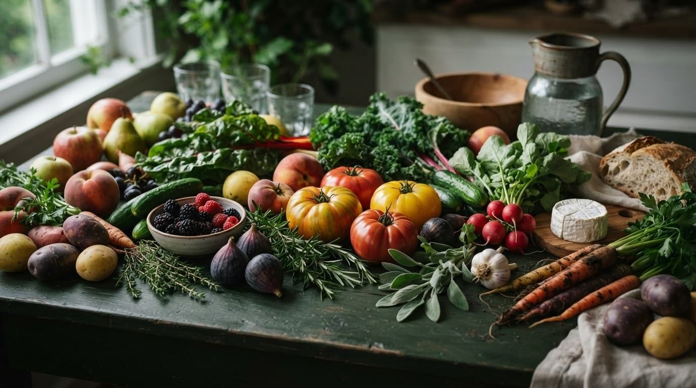
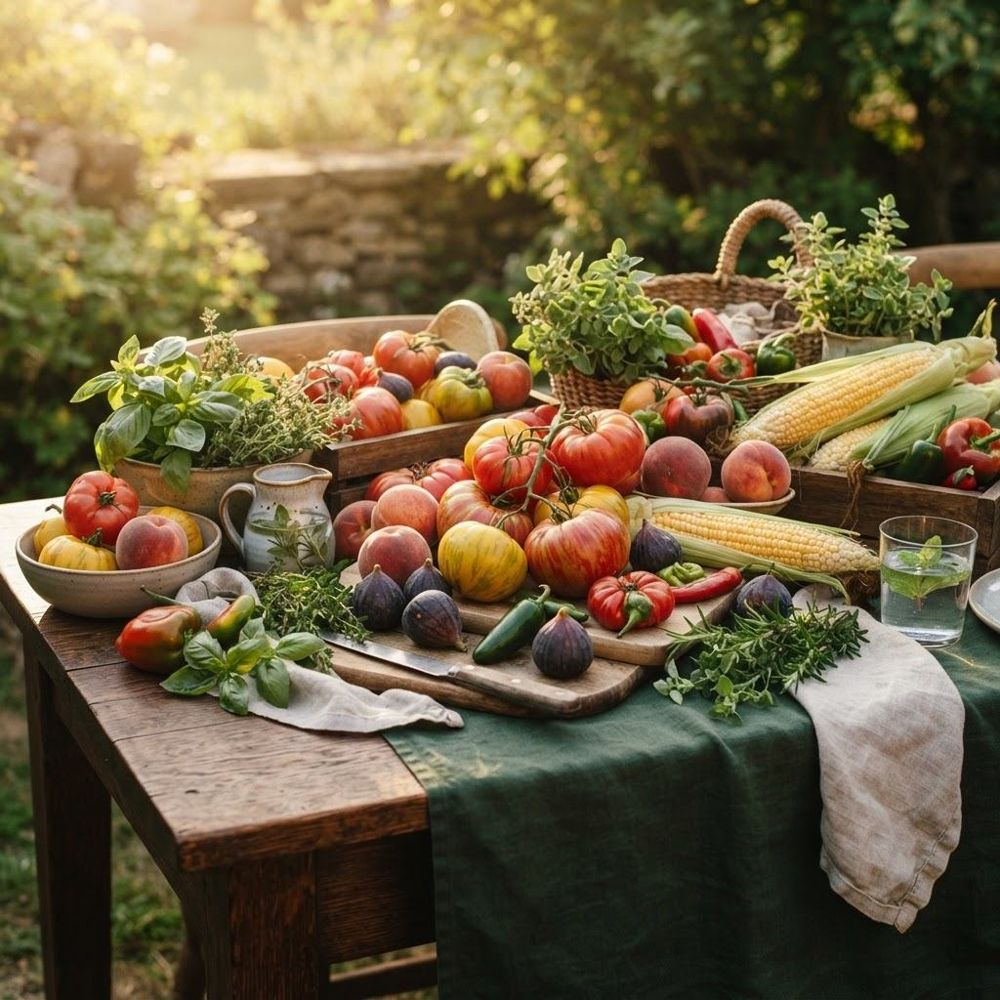

01
Choose more color
Different pigments bring different nutrients. Aim for three colors in every produce-forward meal.
Learn how to choose, enjoy, and care for fruits and vegetables at their flavorful peak — while discovering the local markets that carry them.

Search by name, market or category. Every guide includes live prices, flavour notes, nutrition, storage, and market availability.

Karachi's markets change with the calendar. Here is what our data shows is at its best right now, what's arriving next, and the staples you can rely on all year.
A flexible plate built around seasonal produce gives you more color, texture, nutrients, and pleasure — without making food feel complicated.
Different pigments bring different nutrients. Aim for three colors in every produce-forward meal.
Seasonal produce usually travels less, tastes better, and makes variety happen naturally.
Wash, prep, and place produce where it is easy to reach — simple cues support lasting habits.
Explore seasonal produce, trusted growers, and vibrant local markets.